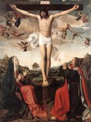

| Святий Михайло, що вбиває дракона
1493-1505
|
 | Авраам і три ангели
1495-1500
|
 | Паломники біля гробниці святого Себастьяна
1497
|
 | Святий Себастьян, вилікуваний святою Іриною
1497-98
|
 | Святий Себастьян заступається за вражених чумою
1497-99
|
| Поклоніння немовляті Христу
1500
| |
|  | Розп’яття
1500-05
|
 | Свята Катерина Олександрійська
|